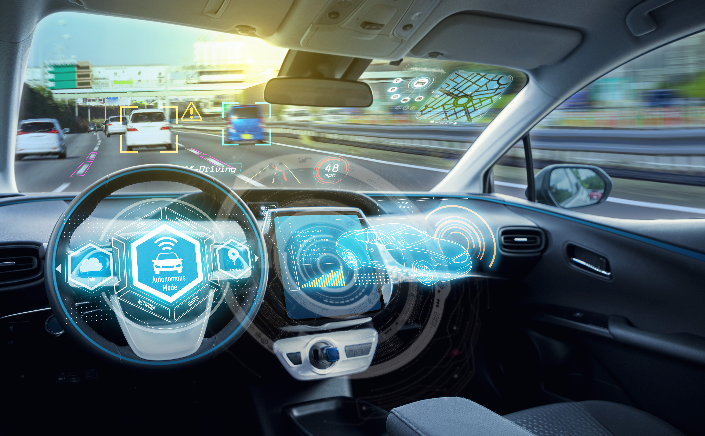

Autonomous Vehicles
State of Autonomous Vehicles
Autonomous vehicles are also known as self-driving cars. These cars are driverless cars where a driver is not required to operate the vehicles. This new technology has the capability to detect the environment surrounding it which leads the vehicle to reduce the number of road accidents and risks.
Many IT industries have been exploring and researching information regarding ‘Autonomous Vehicles’ for the past few years. It is stated that these self-driving cars are definitely going to be released into the world and it is just the matter of time.
There are some states in the U.S where they are already using Autonomous Vehicles, such as California, they have used these cars as taxis and transported around “6,200 people in the first month” and it is still continuing. Additionally, Walmart in the U.S are using Autonomous cargo vans to deliver groceries.
Furthermore, Tesla has a feature called ‘auto-pilot’ in its vehicle where the car is able to detect the environment around it and be able to drive on its own. However, due to an accident that has been caused in the U.S with the use of ‘auto-pilot’ mode, a debate has been raised about self-driving cars and the safety of the public as well as the passengers in the car.
Future of Autonomous Vehicles
When Autonomous vehicles hit the market, there will definitely be many of them on the road since people are always ready to spend their money on new technological developments and especially for something like self-driving vehicles where it allows people to save so much time and in this era time is the most important aspect in everyones’ life. It is predicted that approximately in 2024, Autonomous vehicles will land on roads so that the manufactures can “keep up with tech competitors”.
Every technology/development comes with both advantages and disadvantages. Autonomous vehicles are also the same, they contain both benefits and harms. With the use of self-driving cars, it increases the safety of the public in the surrounding areas as well as the passengers since the vehicle is able to detect the environment as well as any dangers. Hence, it will decrease the risk of road accidents. However, if there is a situation where the vehicle is not able to detect any environment before or behind it, it may cause an accident or damage to the public. For example, if a person is driving a self-driving car at midnight on a highway, it is possible that there might be no street lights in the are which leads the car to not be able to recognise what is coming towards it, such as a person/animal may be crossing the road but the car is not able to see since the view before it is really dark which results in accident and especially since it's a highway, the car would be definitely driving in 100km/hr, therefore an accident occurs.
People affected and how?
With the introduction of autonomous vehicles, many people will be willing to buy these cars, as it leads to increased efficiency and effectiveness, especially for working people where they need to travel a long distance everyday. When people start to buy self-driving cars, many businesses will start to get negatively affected such as airlines, driving school, public transport, etc.
Due to self-driving cars being able to move without human operators, people will start to use their cars to travel interstate instead of using flights. This is because since they have the option to not drive or to pay anyone to drive them to their long destination, people might think it is efficient to use their autonomous vehicles to travel instead of purchasing a flight ticket. Hence, this will lead the airlines to face difficulties in their sales since many people will not be willing to spend money on interstate travelling anymore.
Additionally, there are people where they opened their own driving school and depend on that for their income. With the autonomous vehicles being introduced, these people will get affected highly since many people will stop learning or won’t even think about how to drive cars as it won’t be necessary anymore. This will result in a great loss in income for the driving school businesses where they will need to completely start a new business or find a new job in order to gain income.
Furthermore, the public transporters. People will not use these anymore since a self-driving car will be able to appear in front of them whenever and wherever they need instead of waiting for a bus or train. Many people usually don’t like traveling in public transport since it may be inconvenient for some people where they need to walk more than 5-10 mins just to reach the bus or train station. However, with the use of self-driving cars, they don’t need to wait for it anymore, because the high technology enables them to access a car wherever they are and at any time they need. Therefore, the purchase of train or bus tickets, such as myki will reduce.
Autonomous Affected Daily Life
Since I am a university student where I go to campus every Monday and Tuesday, autonomous vehicles will really be a benefit for me in regards to time management. I normally use public transport to reach my campus where I need to arrive 1 hour early because sometimes the train and the bus timings don’t match, leading me to wait for another train or bus for at least 30mins. With public transport, my minimum travel time is 1 and a half hours, however, if I use a self-driving car, it will take 40 minutes to 1 hour to reach campus. As a result it saves me almost 1 hour as well as I don’t have to arrive 1 hour early.
Autonomous Vehicles Affecting Friends or Family
In my opinion, Autonomous vehicles will help my family and friends in travelling as well since we all live in the same situation and the same area where the timings of the public transport to their jobs or universities is really poor. For example, one of my friends, she studies Bachelor in Biomedicine in Deakin and since it's a science course they have many labs where they need to attend their class on campus. In order for her to reach the campus on time, which is at 9’o o'clock, she needs to catch the train at 7’o clock if she needs to be on time. Additionally, for her to go to the train station, someone needs to drop her because there is no bus stop near her house nor can she walk because it's a 20 minutes distance. Ultimately, the Autonomous vehicles will be a really helpful key for time management for many people because there are a number of places where people don’t have enough and appropriate access to public transport.